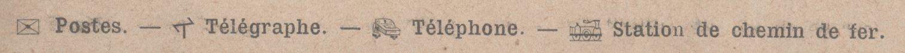

About the project
This digitization project was done as part of the Digitising Culture Heritage Materials course at the University of Borås in spring 2023. It is dedicated to a very old document found in a private family collection, namely a touristic guide of the region Britanny (Bretagne) that circulated with a corresponding map at the beginning of the 20th century in France (Cartes-Guides Campbell). The map was not digitized as part of this project for lack of appropriate resources, however the possibility remains for future development.
About the document
There is very little information out there about this kind of documents. At the moment, only 4 Campbell maps exist digitized as part of the Gallica digital library, however no corresponding guide currently exists in a digital form. This project aims to bring some insight into the dawn of tourism in Britanny and its evolution since over a century.
About the dating
The dating of the document was rather difficult to achieve, since no printing year appears anywhere on it, nor on the corresponding map. However, following some research, I was able to narrow down the possible timeframe of publishing to 1904-1906, leaning towards the year 1905. This was possible due to the clues available throughout the text, such as most recent year mentioned (1903 - Monument d'Ernest Renan (p.25)), or city population numbers (available from the year 1901 but not from next count in 1906). The most conclusive clue is referring to the harbor La Baule (p.13), which is said to have existed since 25 years at the time. As the harbor was created in 1880, I approximated that the text of the brochure was written in 1905.
About the symbols
The guide uses throughout the text some symbols to represent post offices, telegraphs, telephone cabins and train stations. For the transcription, they were translated to the following unicode symbols: 🖂 T ✆ 🚂.
It is worth noting that the telephone symbol looks nothing like a phone we know today. That is because it represents a very early telephone model from the 19th century, such as this one. It was translated to a more modern symbol for representation purposes ✆.
As no Unicode symbol exists to represent the telegraph, which is nowadays obsolete, a capital T was used to represent the concept.